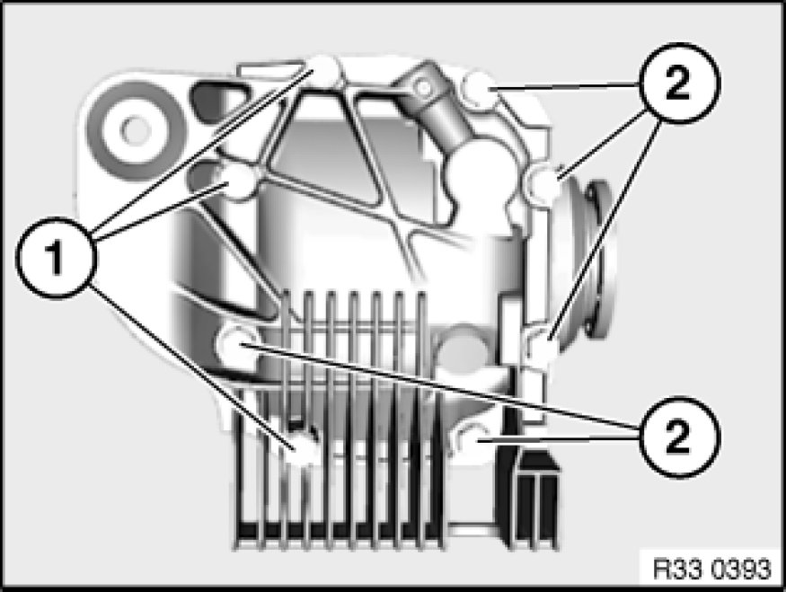

Replacing Rear Cover Gasket on Rear Differential (188K)
33 11 ... - Replacing rear cover gasket on rear differential (188K)

Important!
To avoid leaks from the rear differential cover, do not use a paper gasket in cars with liquid gaskets!
To prevent the differential oil from foaming over, make sure that no remnants of the liquid gasket are pressed into the rear differential housing.

Release screws (1).
Tightening torque (M10x75) 33 11 1AZ 33 11 Rear Differential Case with Cover.
Unscrew screws (2).
Tightening torque (M10x25) 33 11 1AZ 33 11 Rear Differential Case with Cover.
Remove cover.
If necessary, remove remnants of liquid gasket with scraper.
Clean sealing face on cover and rear differential.
Installation Note:
If a paper gasket was fitted, a paper or liquid gasket can be used.
The liquid gasket can be found in Main Group 33 in the Electronic Parts Catalog.